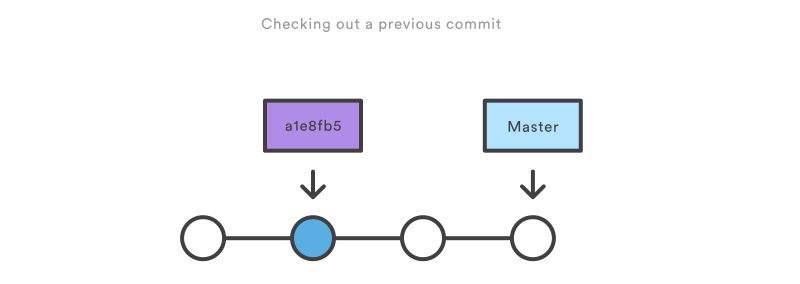

$ git rm [options] <files>
[options]
-f, --force Override the up-to-date check.
--cached
Use this option to unstage and remove paths only from the index.
Working tree files, whether modified or not, will be left alone.
-n, --dry-run
Don't actually remove any file(s). Instead, just show if they exist in the index and would otherwise be removed by the command.
-r Allow recursive removal when a leading directory name is given.
git checkout command serves three distinct functions:
Checking out files,
Checking out commits.
Checking out branches. ( see you later )
$ git checkout <commit>
Update all files in the working directory to match the specified commit.
You can use either a commit hash or a tag.
$ git checkout <commit> <file>
Check out a previous version of a file.
$ git checkout master
Return to the master branch.
Detached HEAD

Revert
$ git revert <commit>
Example:
$ git revert --no-edit HEAD
Reset
$ git reset <file>
Unstages a file without overwriting any changes in (STAGING AREA)
$ git reset
Reset the staging area to match the most recent commit, but leave the working directory unchanged.
$ git reset --hard
Reset the staging area and the working directory to match the most recent commit
Revert Vs Reset
To Digest
git reset is a way to clean up a repository by unstaging changes or uncommitting a series of snapshots and re-building them from scratch.
The --hard flag comes in handy when an experiment has gone horribly wrong and you need a clean slate (working tree) to work with.
Whereas reverting is designed to safely undo a public commit, git reset is designed to undo local changes. Because of their distinct goals, the two commands are implemented differently: resetting completely removes a changeset, whereas reverting maintains the original changeset and uses a new commit to apply the undo.
Revert is a better Undo than reset
The git revert command undoes a committed snapshot. But, instead of removing the commit from the project history, it figures out how to undo the changes introduced by the commit and appends a new commit with the resulting content.
Second, git revert is able to target an individual commit at an arbitrary point in the history, whereas git reset can only work backwards from the current commit.
git clean
$ git clean
The git clean command removes untracked files from your working directory.
$ git clean -n
Perform a “dry run” of git clean. This will show you which files are going to be removed without actually doing it.
$ git clean -f
Try this
$ git clean
Remove untracked files from the current directory. The -f (force) flag is required unless the clean.requireForce configuration option is set to false (it's true by default). This will not remove untracked folders or files specified by .gitignore.
$ git clean -df
Remove untracked files and untracked directories from the current directory.
$ git clean -xf
Remove untracked files from the current directory as well as any files that Git usually ignores.
Note:
The git reset --hard and git clean -f commands are your best friends after you’ve made some embarrassing developments in your local repository and want to burn the evidence.